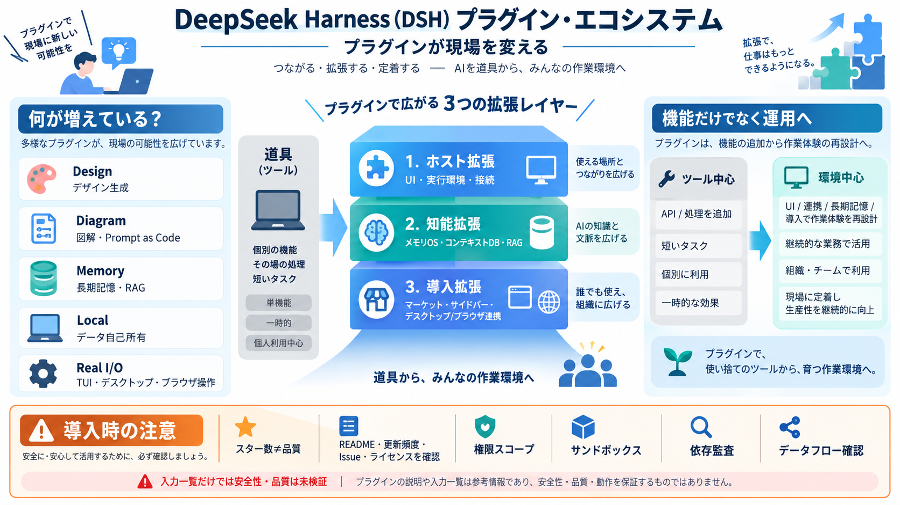

DeepSeek Just Open Sourced the Missing Layer for AI Coding Agents
That is the gap DeepSeek just made public. On August 13, 2026, the company open sourced DeepSeek Harness, or dsh, an age…

DeepSeek Harness（DSH）の周辺では、外部プラグインが増え続け、エージェントの実行環境・UI・メモリ・配布（市場）まで拡張する方向が見えます。
dsh-plugin関連のリポジトリ群から、プラグインが単機能ではなく「運用単位（環境・導線・長期記憶・接続）」として広がっていることが示唆されます。
プラグインはホスト機能（実行環境やUI）だけでなく、エージェントの“コンテキスト/記憶”や“使い始めやすさ”へも広がっています。
「部品を差し替えられる」前提が広がるほど、エージェントは“再利用できる作業環境”として組み上がっていきます。
入力から読み取れる方向性は、（1）ビジュアル/デザイン（2）図解・Prompt as Code（3）メモリ/長期記憶（4）ローカル/自己所有（5）TUI・デスクトップ・ブラウザ入出力に分かれます。
プラグインは「呼べるツール」だけでなく、「いつ・どこで・どの権限で・どう記憶するか」という運用面まで影響します。
スターが多いほど露出は高いものの、品質・保守性・セキュリティ・最新性は別問題です。
ログイン済みブラウザ操作や長期記憶、マーケットプレイスは、権限・データ・依存関係のリスクを増やし得ます。
DSHプラグインは「現場で動くエージェント」を加速させていますが、導入は技術評価だけでなく“リスク管理の設計”とセットで行う段階です。
本資料は、ユーザー提供の要約（GitHub上の「dsh-plugin」関連リポジトリ一覧・説明文の記述）と、Web/過去履歴の補足情報に基づき構成しています。
That is the gap DeepSeek just made public. On August 13, 2026, the company open sourced DeepSeek Harness, or dsh, an age…
(link-preserving); drop the completed \"restructure this document\" TODO. - ADR 0009 (capability seams) + 0010 (twin LLM…
[12:11] okay. So on your local search for DSH in the home directory or the installation [12:17] directory and then you c…
DeepSeek Harness trajectory view showing a timeline, tool calls, and execution details ## Developer experience ### Sta…
### Top Holders ## About DeepSeek AI Agent DeepSeek is a pioneering cryptocurrency inspired by the groundbreaking Deep…